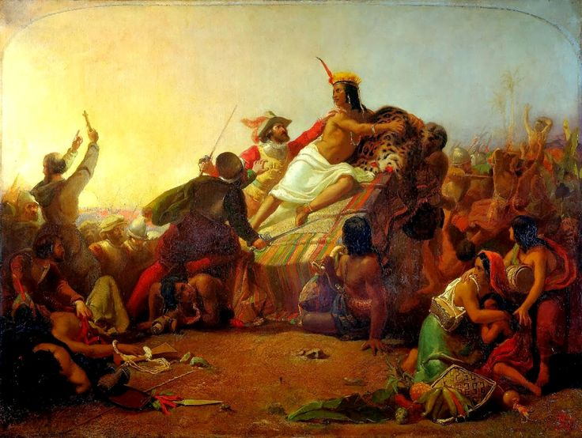
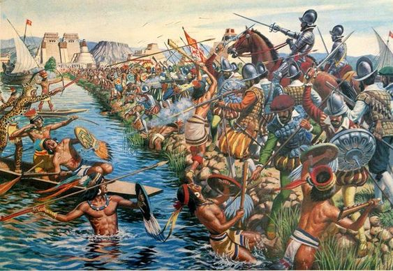

Kimdir Konkistadorlar?
Konkistador (İspanyolca: conquistador — “fatih”), 15. ve özellikle 16. yüzyılda Amerika kıtasını keşfedip fetheden İspanyol asker, maceracı ve kâşiflere verilen isimdir.
İspanya’da 1492’de Müslümanların son kalesi Granada’nın düşmesiyle biten Reconquista (Yeniden Fetih) dönemi, bu savaşçı ruhu Yeni Dünya’ya taşıdı. Altın, şöhret, toprak ve Katolik inancını yayma arzusuyla hareket eden konkistadorlar, çok az sayıda askerle dev imparatorlukları yıktılar.

İspanyol konkistadorlar, atları, zırhları ve haç bayraklarıyla Yeni Dünya’ya ayak basıyor (tarihi illüstrasyon).
En Ünlü İki Konkistador
1. Hernán Cortés (1485-1547)

Hernán Cortés – Aztek İmparatorluğu’nun fatihi.
1519’da yaklaşık 500 adam ve 11 gemiyle Küba’dan Meksika’ya yola çıktı. Aztek İmparatorluğu’nun başkenti Tenochtitlan’ı (bugünkü Mexico City) fethetti. Yerli Tlaxcala halkıyla ittifak kurarak, üstün silahları (ateşli silahlar, atlar, çelik kılıçlar) ve stratejik dehasıyla dev bir imparatorluğu yıktı.
“Tanrı ve Kral adına” sloganıyla hareket eden Cortés, Aztek hükümdarı Montezuma’yı esir aldı ve 1521’de Tenochtitlan’ı kuşatarak ele geçirdi.
2. Francisco Pizarro (1478-1541)

Francisco Pizarro – İnka İmparatorluğu’nun fatihi.
Cortés’in ikinci dereceden kuzeni olan Pizarro, 1531’de sadece 180 adam ve 37 atla Peru’ya çıktı. İç savaş yaşayan İnka İmparatorluğu’nu zayıf anında yakaladı. İnka imparatoru Atahualpa’yı pusuya düşürerek esir aldı ve muazzam bir altın fidye aldıktan sonra idam ettirdi. 1533’te İnka başkenti Cusco’yu, 1535’te ise Lima’yı kurdu.

John Everett Millais’in ünlü tablosu: Pizarro, İnka İmparatoru Atahualpa’yı ele geçiriyor.
Fetihlerin Seyri ve Etkileri
- 1519-1521: Cortés’in Aztek İmparatorluğu’nu fethetmesi. Tenochtitlan’ın düşüşüyle “Yeni İspanya” (Meksika) kuruldu.
- 1532-1533: Pizarro’nun İnka İmparatorluğu’nu fethetmesi. Muazzam altın ve gümüş akışı İspanya’ya ulaştı.
- Diğer önemli isimler: Pedro de Alvarado (Guatemala), Diego de Almagro (Pizarro’nun ortağı), Vasco Núñez de Balboa (Pasifik’i keşfeden ilk Avrupalı).

Cortés’in ordusu Tenochtitlan’ı kuşatıyor (17. yüzyıl tablosu).
“Biz İspanyollar az sayıdaydık ama Tanrı bizimleydi ve atlarımız, silahlarımız düşmanlarımızı korkuttu.” — Hernán Cortés
Neden Başardılar?
• Çelik kılıçlar, zırhlar, top ve tüfekler
• Atlar (Amerika’da ilk kez görülüyordu, yerlileri korkuttu)
• Yerli halklar arasındaki düşmanlıkları kullandı
• Tlaxcala ve diğer kabilelerle ittifaklar kurdu
• Avrupalıların getirdiği çiçek, kızamık gibi hastalıklar milyonlarca yerliyi öldürdü (bağışıklık yoktu)
• Aztek ve İnka imparatorluklarındaki iç savaşlar ve taht kavgaları
Sonuç ve Miras
Konkistadorların fetihleri, İspanya’yı 16. yüzyılda dünyanın en güçlü imparatorluğu yaptı. Amerika’dan akan altın ve gümüş “Fiyat Devrimi”ne yol açtı. Ancak bu başarı, milyonlarca yerlinin ölümü, kültürlerin yok olması ve kölelik sistemiyle (encomienda) lekelendi.
Günümüzde konkistadorlar hem kahraman hem de acımasız sömürgeciler olarak tartışılır. Fetihleri, Latin Amerika’nın bugünkü dil, din ve kültür mozaiğinin temelini attı.
.png)
Tenochtitlan’ın düşüşü – İspanyolların zaferi ve Azteklerin trajedisi.